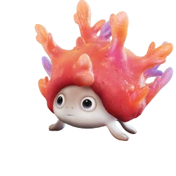

รายชื่อ Aniimo › #084

Reefish
#084ธาตุน้ำ / ดินLuminRegenยังไม่เปิดให้จับ
มุดลงใต้ดินพรางตัวเป็นปะการังแล้วกัดเหยื่อที่เข้าใกล้ แต่บางครั้งก็ใจร้อนแอบโผล่ออกมาดู
ดูรายละเอียดเต็ม ร่างพิเศษ และร่างเปล่งประกายค่าสถานะพื้นฐาน
| HP | 83 |
|---|---|
| ATK | 66 |
| P.DEF | 75 |
| M.DEF | 79 |
| REGEN | 92 |
| BREAK | 91 |
สกิล
| โจมตีปกติ | ATK ดิน ใช้พลังแห่งดินโจมตีเป้าหมายในระยะใกล้ |
| สกิล 1 | Coral Trap ดิน สร้างกับดักปะการังด้านหน้าเป็นเวลา 5 วิ. ทำดาเมจแก่เป้าหมายทุกวินาที และติดดีบัฟดิน 1 สแต็ก |
| สกิล 2 | Quicksand Slam ดิน สร้างทรายดูดด้านหน้า ทำดาเมจและติดสถานะ [ถูกจองจำ] เป็นเวลา 2 วินาที |
งานใน Homeland
งานธาตุน้ำ Lv.1, งานธาตุดิน Lv.1